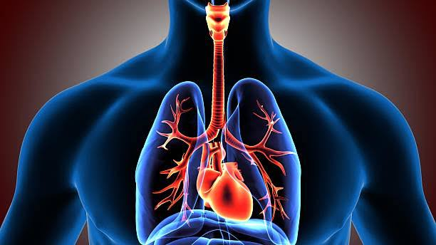
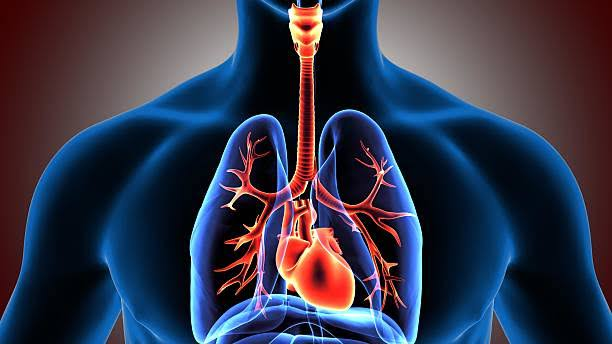

Alat Pernapasan
d. Trakea
Trakea atau batang tenggorok merupakan saluran pernapasan berbentuk pipa yang disusun oleh cincin-cincin tulang rawan dan terbuka di bagian belakangnya. Panjang trakea sekitar 9 cm dan terdiri atas 16-20 buah cincin tulang rawan. Letaknya di depan kerongkongan, ada yang di daerah leher (trakea cervikalis) dan ada yang berada di daerah dada (trakea torakalis). Pada bagian dalam dinding batang tenggorok dilapisi oleh selaput lendir yang mempunyai sel-sel rambut getar, fungsinya untuk mengeluarkan kotoran yang rusak bersama udara pérnapasan.
Di dalam rongga dada, tepatnya setinggi tulang belakang bagian dada ke-5, batang teng- gorok bercabang menjadi dua cabang tenggorok (bronkus). Masing-masing cabang tenggorok menuju ke paru-paru kanan dan ke paru-paru kiri. Bronkus kanan lebih pendek dan lebih lebar dari pada bronkus kiri.
Dinding batang tenggorok maupun bronkus terdiri atas tiga lapisan. Lapisan terdalam adalah epitel; lapisan tengah berupa gelang-gelang tulang rawan dan daging yang berotot polos; lapisan terluar terdiri dari jaringan pengikat. Pada penderita asma, otot tersebut berkontraksi dan hal ini menyebabkan sukar bernapas. Lapisan epitel menghasilkan lendir dan juga mempunyai rambut getar. Rambut-rambut getar tersebut bergetar tetap ke satu arah, sehingga benda-benda padat yang ikut masuk bersama udara pernapasan tertangkap oleh lendir dan secara teratur didorong keluar oleh rambut getar.
Di dalam paru-paru, cabang tenggorok bercabang-cabang lagi menjadi saluran yang sangat kecil, disebut bronkiolus. Pada ujung bronkiolus terdapat gelembung kecil yang disebut gelembung paru-paru (alveolus).
Trakea

Di dalam rongga dada, tepatnya setinggi tulang belakang bagian dada ke-5, batang teng- gorok bercabang menjadi dua cabang tenggorok (bronkus). Masing-masing cabang tenggorok menuju ke paru-paru kanan dan ke paru-paru kiri. Bronkus kanan lebih pendek dan lebih lebar dari pada bronkus kiri.
Dinding batang tenggorok maupun bronkus terdiri atas tiga lapisan. Lapisan terdalam adalah epitel; lapisan tengah berupa gelang-gelang tulang rawan dan daging yang berotot polos; lapisan terluar terdiri dari jaringan pengikat. Pada penderita asma, otot tersebut berkontraksi dan hal ini menyebabkan sukar bernapas. Lapisan epitel menghasilkan lendir dan juga mempunyai rambut getar. Rambut-rambut getar tersebut bergetar tetap ke satu arah, sehingga benda-benda padat yang ikut masuk bersama udara pernapasan tertangkap oleh lendir dan secara teratur didorong keluar oleh rambut getar.
Di dalam paru-paru, cabang tenggorok bercabang-cabang lagi menjadi saluran yang sangat kecil, disebut bronkiolus. Pada ujung bronkiolus terdapat gelembung kecil yang disebut gelembung paru-paru (alveolus).
